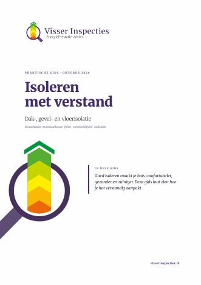

‹
Gids delen

Isoleren met verstand
Praktische gids over dak-, gevel- en vloerisolatie · oktober 2026
Gids bekijken ›
Voor wie?
Naam (voor de aanhef, mag leeg)
E-mailadres (mag leeg)
Mobiel nummer voor WhatsApp (mag leeg)
Concept-e-mail maken
Delen via WhatsApp
Tekst en link kopiëren
Tekst controleren
E-mail
Onderwerp
Standaardtekst terugzetten
WhatsApp
Standaardtekst terugzetten